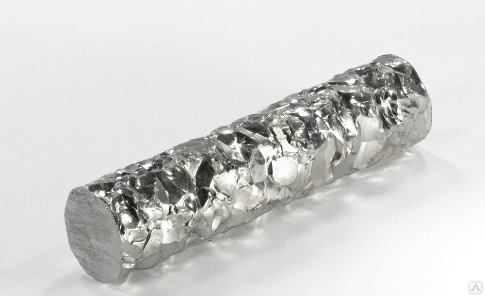
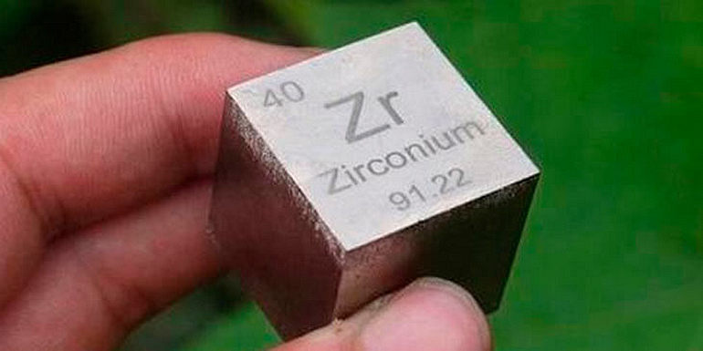

Цирконий
Цирко́ний (химический символ — Zr, от лат. Zirconium) — химический элемент 4-й группы (по устаревшей классификации — побочной подгруппы четвёртой группы, IVB), пятого периода периодической системы химических элементов Д. И. Менделеева, с атомным номером 40.Простое вещество цирконий — это блестящий переходный металл серебристо-серого цвета.Обладает высокой пластичностью и устойчив к коррозии.
Открыт М. Клапротом в 1789 г. – в виде диоксида выделен из образца циркона; неочищенный металлический цирконий получен Й. Берцелиусом в 1824 г., чистый – нидерландскими учёными А. ван Аркелем и Я. Х. де Буром в 1925 г. Название получил по минералу циркону от персидского zargun – золотистый.
Цирконий – серебристо-серый (в порошкообразном виде тёмно-серый) блестящий металл, в чистом виде пластичен и легко поддаётся механической обработке; небольшие примеси О, С, N придают хрупкость. При 863 °С переходит из α-фазы с гексагональной кристаллической решёткой в кубическую β-фазу; tпл 1855 °С, tкип около 4350 °С; плотность 6520 кг/м3; теплопроводность 23 Вт/(м·К); температурный коэффициент линейного расширения 5,7·10–6 К–1. Модуль упругости 95–97 ГПа, предел прочности при растяжении 380–510 МПа; твёрдость по Бринеллю 680–1880 МПа, по Виккерсу 600–1800 МПа, по Моосу 5 МПа. Производство циркония из концентратов ведут фторидным, хлоридным или щелочным способами; очистку, концентрирование и отделение от Hf – жидкостной экстракцией. Металл получают кальциетермическим восстановлением ZrF4, натриетермическим восстановлением ZrCl4, реже – электролитическим методом; чистый цирконий – иодидным рафинированием, переплавкой в вакуумных электродуговых и электронно-лучевых печах. Мировое производство циркония 1,5–1,6 млн т/год и с годами увеличивается.

Цирконий используют в качестве конструкционного материала в виде сплавов и добавок к сталям, Al, Cu, Mg, Ti, Nb, Mo, в виде циркалоя для оболочек твэлов и других деталей ядерных реакторов, для сверхпроводящих сплавов. В хирургии используют как имплантат и материал медицинских инструментов. Производят трубы, фитинги, фольгу, проволоку, губку. Из порошкообразного циркония изготавливают детонаторы, компоненты осветительных ракет, заряды для объёмных взрывов. Соли циркония используют в качестве красителей, компонентов лаков, катализаторов, водоотталкивающих средств для тканей, антиперспирантов и дезодорантов. Цирконаты применяют для получения высокотемпературной керамики и огнеупоров. Твёрдые растворы PbZrO3–PbTiO3, BaZrO3–BaTiO3 – диэлектрики и пьезоэлектрики. Циркон и его окрашенные разновидности (гиацинт) применяют в ювелирном деле.
